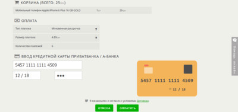

Клиенты Rozetka теперь могут покупать товары в рассрочку, оплачивая на сайте только часть покупки. Крупнейший украинский интернет-магазин и ПриватБанк запустили технологию онлайн-кредитования, которая дает возможность мгновенно оформлять рассрочку прямо на сайте rozetka.ua.

"Я и многие мои друзья уже давно покупаем товары в Rozetka, поэтому я очень доволен, что именно в этом магазине можно не только мгновенно оформить покупку, но и покупать товары в рассрочку, – говорит Заместитель Председателя Правления ПриватБанка Роман Негинский. – Для этого не нужно никаких справок, документов и согласований, оформление кредита занимает полминуты, а получить покупку быстрее всего можно в нашем почтомате в отделении банка."
Чтобы оформить покупку в Rozetka в рассрочку, покупателю достаточно выбрать товар на сайте магазина, способ оплаты – «Мгновенная рассрочка», и указать реквизиты своей пластиковой карты. После этого остается подтвердить операцию с помощью пароля, который приходит на мобильный телефон клиента, получить подтверждение банка о возможности выдачи кредита. При условии своевременного внесения всех платежей, пользование кредитом для покупателя будет бесплатным.
На сегодняшний день к сервису «Мгновенная рассрочка» подключены крупнейшие компании интернет-торговли в Украине, а также 32 223 торговые точки, среди которых все популярные украинские сети по продаже техники, мобильных телефонов, одежды, обуви и других товаров.
Источник: itnews.com.ua